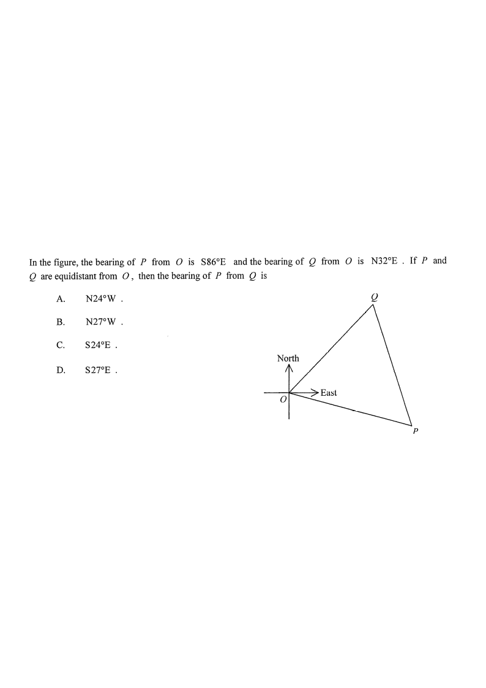

In the figure, the bearing of \(P\) from \(O\) is \(S86^\circ E\) and the bearing of \(Q\) from \(O\) is \(N32^\circ E\). If \(P\) and \(Q\) are equidistant from \(O\), then the bearing of \(P\) from \(Q\) is

Draw \(H\) vertically below \(Q\) so that \(QH\) is due south, and \(OH\) is the East direction from \(O\).
Then \(QH \parallel\) the North–South line through \(O\).
\(\angle HQO = 32^\circ\) (alt. \(\angle\)s, \(QH \parallel ON\))
The bearing \(N32^\circ E\) means \(OQ\) is \(32^\circ\) East of North, so the angle between \(OQ\) and \(OE\) is \(90^\circ-32^\circ=58^\circ\).
The bearing \(S86^\circ E\) means \(OP\) is \(86^\circ\) East of South, i.e. \(90^\circ-86^\circ=4^\circ\) below the East axis.
\[\angle POQ = 90^\circ-32^\circ+86^\circ-90^\circ ... \]
Equivalently, using the Straight-line / angle-on-a-line argument from the figure:
\[\angle POQ = 180^\circ-32^\circ-86^\circ=62^\circ\]
Given \(OP=OQ\), triangle \(OPQ\) is isosceles, so the base angles at \(P\) and \(Q\) are equal.
\[\angle PQO=\angle QPO\]
\[\angle PQO+\angle QPO=180^\circ-62^\circ=118^\circ \quad(\angle \text{ sum of } \triangle)\]
\[\therefore \angle PQO=118^\circ\div 2=59^\circ\]
The North line at \(Q\) is parallel to \(OH\). The angle \(\angle HQO = 32^\circ\) lies between the south line \(QH\) and \(QO\).
So the angle between \(QP\) and the south line \(QH\) is
\[\angle HQP=\angle PQO-\angle HQO=59^\circ-32^\circ=27^\circ\]
Since \(P\) lies to the East side of the North–South line through \(Q\), the bearing of \(P\) from \(Q\) is
\[S27^\circ E\]